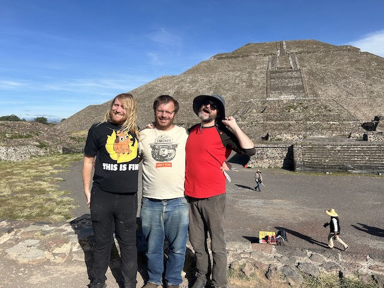
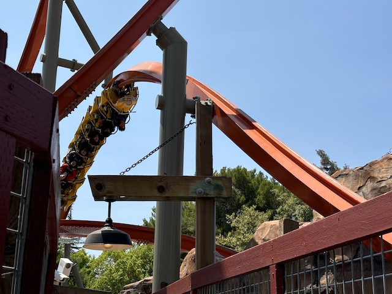
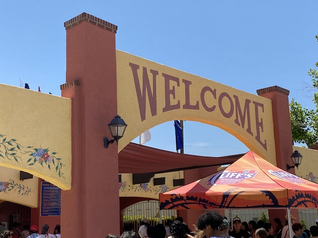
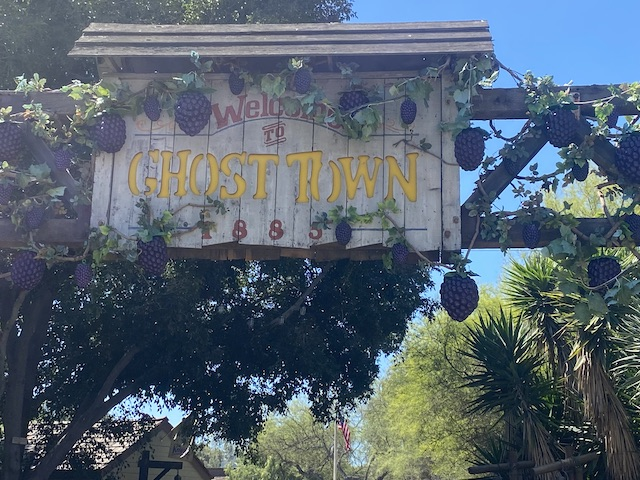
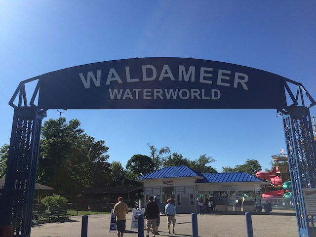
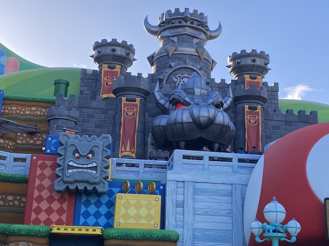
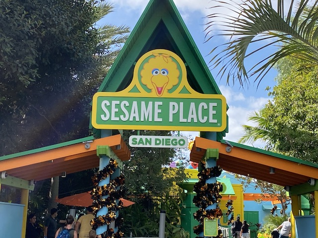
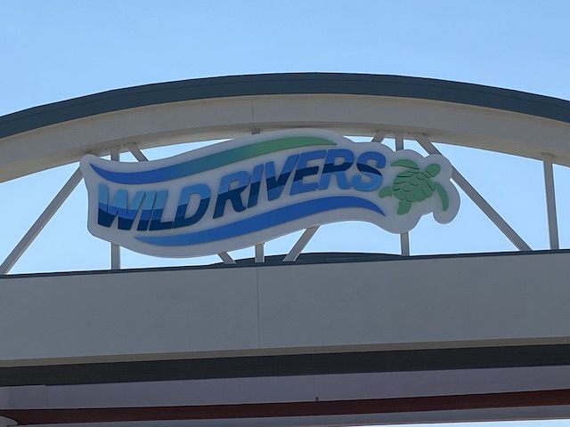

|
|
|  |
All right. Time for our one major trip of 2024, and....we're off to a new country. Our neighbor down south. Hola from Mexico. And we had a ton of fun checking out Mexico City. Not only did we get our roller coaster fix checking out Six Flags Mexico and all that has to offer, we also checked out some cool pyramids, a lucha libre show, everything at Chapultepec Park, a sh*tton of museums, great Mexican food, and a ton more fun in Mexico City. |
|  |
It's been quite some time since we had a large NorCal update. But we're back in the distant half of California, and we're here to have some fun. Check out some cool rides at California's Great America before they decide to tear that park down, explore one of California's best water parks in SunSplash, see the Jelly Belly Factory, hang out with a friend in San Francisco, and even deal with a couple of errands and sh*t going wrong in multiple ways. |
|  |
Time for another park review. And we're critiquing a pretty isolated park, hitting up Cliff's Amusement Park, which is in Albuquerque. Which....yeah. Not a big coaster hotspot, being very far away from any other theme parks. But this is still a fun little park, having a lot of standard fun rides, plus a really cool wooden coaster. Check that out a well as everything else that Cliff's has to offer. |
|  | Knotts Boysenberry Festival 2024 It's that time of year again. The best time of the year to visit Knotts Berry Farm. Yep. We're back at the Boysenberry Festival. How good was this visit? What sort of tasty concoctions did they come up with this year? Did it top itself again? All of this will be shown, along with a few rides, and some brief moments from our one 2023 visit. |
 |
Time for another park review. And this is.....one of the most interseting parks in America. Primarily in the sense that....this acts far more like a city park with a small handful of rides. But this isn't just a small little credit whoring stop for locals. No, this has some VERY interesting rides, including the oldest coaster in the world. Check out review of that, and see what all this quirky park has to offer |
 |
So Sea World San Diego opened up a new coaster last year. But we couldn't get to it due to life's bullsh*t. So we're hitting it now. Better late than never. Check out all the fun of Sea World's newest coaster, Arctic Rescue. On top of that, check out the other fun coasters of Sea World as well as some cool animal fun and even some artwork. |
|  |
Time for another park review. We're at one of the few parks left in America with a major coaster that I had yet to visit. Waldameer. This park is home to Ravine Flyer II, a really fun wooden coaster with its own review that's part of this update. On top of that, check out everything else Waldameer has to offer as a small, but charming old-school classic amusement park. |
|  |
All right. Right after Nintendo World Opened up at Universal Studios Hollywood last week, we had to go and check it out. While we didn't get much of the rest of the park done, be sure to check out all that Nintendo World has to offer in this update that showcases the newest area of Universal Studios Hollywood |
|  |
All right. One of the more ignored water parks of Southern California was given a giant makeover into Sesame Place, and....that included a new credit. And since we can get in for free, it's credit whore time! Check out what the new Sesame Place has to offer, how the original water park fares under the Sesame Street brand, as well as seeing some fun at Sea World San Diego, finally getting on a certain that never opened right before they tore it out. So yeah. Check that out. |
|  |
All right. After being closed for over a decade, the best water park in California has returned! Well...sort of. Yes, there's a new Wild Rivers back in Orange County. Is it the exact same as the old Wild Rivers? No. But it's still a great water park with some fantastic slides and a wink a nod to the original park. Check out all it has in our update on it. |